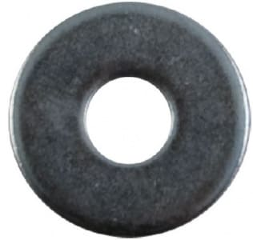

DIN 9021 Шайба кузовная
Стандарт
DIN 9021
Цена от
0,11 ₽
Размерный ряд
от М3 до М36
Шайбы металлические, кольца » DIN 9021 Шайбы кузовные увеличенные плоские усиленные
Варианты и размеры (19)
| Наименование | Размер | Длина, мм | Материал | Покрытие | Цена |
|---|---|---|---|---|---|
| DIN 9021 Шайба кузовная M10 L=5мм | M10 | 5 | 0,13 ₽ | ||
| DIN 9021 Шайба кузовная M12 L=13мм | M12 | 13 | 0,17 ₽ | ||
| DIN 9021 Шайба кузовная M14 L=15мм | M14 | 15 | 0,20 ₽ | ||
| DIN 9021 Шайба кузовная M16 L=17мм | M16 | 17 | 0,22 ₽ | ||
| DIN 9021 Шайба кузовная M18 L=20мм | M18 | 20 | 0,25 ₽ | ||
| DIN 9021 Шайба кузовная M20 L=22мм | M20 | 22 | 0,28 ₽ | ||
| DIN 9021 Шайба кузовная M22 L=23мм | M22 | 23 | 0,30 ₽ | ||
| DIN 9021 Шайба кузовная M24 L=26мм | M24 | 26 | 0,34 ₽ | ||
| DIN 9021 Шайба кузовная M27 L=30мм | M27 | 30 | 0,39 ₽ | ||
| DIN 9021 Шайба кузовная M3 L=2мм | M3 | 2 | 0,10 ₽ | ||
| DIN 9021 Шайба кузовная M3.5 L=5мм | M3.5 | 5 | 0,10 ₽ | ||
| DIN 9021 Шайба кузовная M30 L=33мм | M30 | 33 | 0,44 ₽ | ||
| DIN 9021 Шайба кузовная M33 L=36мм | M33 | 36 | 0,49 ₽ | ||
| DIN 9021 Шайба кузовная M36 L=39мм | M36 | 39 | 0,55 ₽ | ||
| DIN 9021 Шайба кузовная M4 L=3мм | M4 | 3 | 0,10 ₽ | ||
| DIN 9021 Шайба кузовная M5 L=3мм | M5 | 3 | 0,10 ₽ | ||
| DIN 9021 Шайба кузовная M6 L=4мм | M6 | 4 | 0,10 ₽ | ||
| DIN 9021 Шайба кузовная M7 L=4мм | M7 | 4 | 0,11 ₽ | ||
| DIN 9021 Шайба кузовная M8 L=4мм | M8 | 4 | 0,12 ₽ |